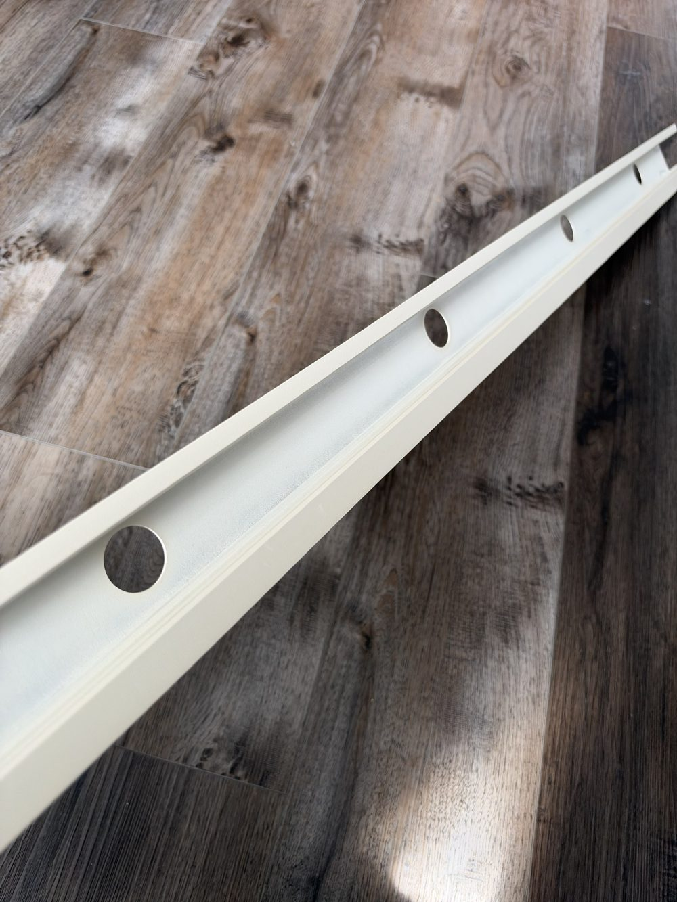

How OSMPRO Permanent Lights compare
A side-by-side look at OSMPRO against JellyFish, Celebright, Govee, Oelo, Haven and other popular permanent lighting brands.
3 diodes vs 6 diodes
Most permanent lighting is built to a price. Ours is built to last, and to disappear into your home.


Each OSMPRO light holds 3 RGB diodes and 3 true white diodes. That means more brightness, richer colour and a genuinely clean white, not a washed-out blend.
| Feature | Typical systems | OSMPRO |
|---|---|---|
| Diodes per light | 3 diodes | 6 diodes: 3 RGB + 3 true white |
| Brightness | Standard output | More bright, richer colour separation |
| Lifespan | 50,000 hours | 100,000 hours: 11+ years of continuous use |
| Track | No tracks | Custom-fit track matched to your soffit |
| Control box | None | Dedicated control box |
| App control | Limited | 100% app controlled, even when away |
| Visible wires | Often visible | No visible wires |
| Safety | Varies | UL tested, UL/cUL listed |
| Warranty | Short or none | 10-year warranty |
Typical systems based on publicly available information. Specifications vary by brand and model.
The numbers that matter
Four specs that decide how bright, durable and dependable a permanent lighting system will be.
LEDs per light
More LEDs means more brightness, richer colour and smoother coverage.
System voltage
Higher voltage carries power further with fewer power injection points.
Rated lifespan (hours)
100,000 hours is over 11 years of continuous use.
Warranty (years)
Backed by one of the longest warranties in the category.
Side-by-side comparison
OSMPRO against the brands homeowners ask about most.
| Brand | Voltage | LEDs per light | True white | Lifespan | Warranty |
|---|---|---|---|---|---|
| OSMPRO | 48V | 6 | Yes, 3 dedicated | 100,000 h | 10 years |
| JellyFish | 48V | 3 | No, RGB only | 50,000 h | 5 years |
| Celebright | 24V | 1 | Single LED | 50,000 h | Not listed |
| Govee | 36V | 1 puck | Single LED | about 50,000 h | Consumer policy |
| Oelo | 36V | 2 | No dedicated white | Not listed | 7 years |
| Haven | 24V | Not listed | Not listed | 30,000 h | 5 years |
“Not listed” means we have not found a published figure.
Also compared
| Brand | Voltage | Key points |
|---|---|---|
| Gemstone | 12V | 3 LEDs per light |
| EverLight | 5V / 24V | 3-year warranty |
| Trimlight | 12V (roofline) | RGB only, no true white |
| Bosso | 12V | Three-lens puck design |
OSMPRO vs each brand
Where we are different, brand by brand.
OSMPRO vs JellyFish
Same 48V power, but 6 LEDs per light against 3, a dedicated true white against RGB-blended white, 100,000 hours against 50,000 and a 10-year warranty against 5.
OSMPRO vs Celebright
48V against 24V, 6 LEDs per light against 1, and double the rated lifespan at 100,000 hours.
OSMPRO vs Govee
A consumer DIY product. Ours is 48V against 36V, 6 LEDs against a single puck, a custom colour-matched track instead of adhesive tape, and 100,000 hours against about 50,000.
OSMPRO vs Oelo
48V against 36V, 6 LEDs per light against 2, dedicated true white LEDs, and a 10-year warranty.
OSMPRO vs Haven
48V against 24V, 100,000 hours against 30,000, and a 10-year warranty against 5.
OSMPRO vs EverLight
48V against 5V or 24V, and a 10-year warranty against 3 years.
OSMPRO vs Trimlight
48V against 12V on roofline systems, with true white LEDs where theirs are RGB only.
OSMPRO vs Bosso
48V against a 12V three-lens puck design, with 6 LEDs per light against 3.
OSMPRO vs Gemstone
48V against 12V and 6 LEDs per light against 3.
What sets our system apart
Beyond the specs, the hardware is built to disappear into your home.



Custom-fit tracks
Matched to your soffit. No tape, no clips, no visible wires.
100% app controlled
Colours, patterns and schedules, even when you are away.
IP68 waterproof and UL/cUL listed
Built for Canadian weather.
Other brands: publicly available information, October 2026. Specifications may change.